Questão 1 · Tratamento Cirúrgico do Megaesôf ago NãoAvançado · 4000190675REZENDE J. M.; LAUAR K. M.; OLIVEIRA. A. R. Aspectos clínicos e radiológicos da aperistalse do esôfago. Revista Brasileira de Gastroenterologia. 1960; 12: 247 – 62. No tratamento da doença representada nesse exame radiológico contrastado, podem ser usadas determinadas técnicas cirúrgicas. Assinale a alternativa que indica essas técnicas.
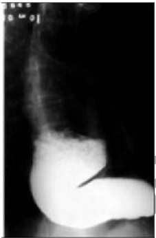
A Cardioplastia à Thal-Hatafuku e operação de Duhamel
B Operação de Duhamel e esofagectomia
C Cardiomiotomia à Heller e operação de Frey
D Cardioplastia à Thal-Hatafuku e esofagectomia
E Cardiomiotomia à Heller e operação de Whipple
Questão 2 · Anel de Schatzki · 4000188699Marque a alternativa CORRETA.
A A disfagia por doença neoplásica ocorre com mais frequência em idosos, evolui de forma lenta e gradativa, havendo uma perda ponderal acentuada.
B Pacientes com doença do refluxo gastroesofagiano desenvolvem frequentemente disfagia, após longa história de pirose.
C O anel de Schatzki é uma obstrução mecânica da luz esofagiana, cursando com disfagia não progressiva e sem perda de peso.
D Distúrbios esofagianos são a causa mais frequente de dor torácica.
E O esfíncter superior do esôfago é o principal mecanismo antirrefluxo.
Questão 3 · Divertículo de Zenker · 4000187253O divertículo faringoesofágico é o divertículo esofágico mais comum. Situa-se herniando em uma região denominada trígono de Killian. A complicação mais mórbida do não tratamento desta doença em pacientes idosos é:
A Carcinoma escamoso.
B Esôfago de Barret.
C Pneumonias por aspiração.
D Perda ponderal.
Questão 4 · Investigação Complementar · Divertículo de Zenker · Principais Distúrbios da Motilidade · 4000187057Sobre os distúrbios neuromusculares do esôfago, assinale a alternativa INCORRETA.
A O divertículo de Zenker é um divertículos falso, de pulsão.
B Os divertículos faringoesofágicos menores tem melhor redução dos sintomas com o tratamento cirúrgico, enquanto os maiores se beneficiam mais do tratamento endoscópico.
C Os divertículos epifrênicos são divertículos verdadeiros e estão associados com acalásia e outros distúrbios da motilidade esofágica.
D Disfagia progressiva, perda ponderal e regurgitação fazem o quadro clínico da acalasia.
E O padrão ouro para o diagnóstico da acalasia é a manometria esofágica. O esofagograma pode mostrar a típica imagem do bico de pássaro.
Questão 5 · Manif estações Clínicas · Disf agia Esof ágica Disf agia de Condução · Acalásia Secundária Chagásica · 4000184696Paciente de 70 anos, relata que vêm apresentando di culdade para engolir há vários anos, queixando-se de sensação de entalo até para alimentos pastosos necessitando de ingesta de líquido para "empurrar" a comida. Notou emagrecimento neste período, acha que perdeu 20 Kg. Nasceu e reside em zona rural próximo a São José do Rio Preto, nega histórico de neoplasia em sua família. Procurou atendimento em sua cidade onde realizou uma Endoscopia Digestiva Alta (EDA) cujo laudo mostrou esofagite edematosa e gastrite enantematosa. Sobre este quadro clínico e dentre as alternativas abaixo, qual a que melhor se enquadra na condução deste caso:
A Solicitar um Exame Radiológico Contrastado tendo como hipótese diagnóstica o megaesôfago.
B A EDA foi sugestiva de refluxo gastroesofágico, com isso iniciar o tratamento com inibidor de bomba de Próton (IBP) e medidas comportamentais.
C O melhor seria repetir a EDA com biópsias para pesquisa do Helicobacter Pylori
D Iniciar tratamento com IBP mas solicitar um Tomografia de Tórax para excluir uma compressão extrínseca.
Questão 6 · Perf uração de Esôf ago · Síndrome de MalloryWeiss · 4000184301Uma paciente de 48 anos chega ao hospital com relato de vômitos frequentes há 1 dia, progredindo para dor intensa em região subesternal nas últimas horas. Com base no caso clínico e nos conhecimentos médicos correlacionados, julgue o item a seguir. Uma das hipóteses diagnósticas para essa paciente é a de ruptura esofágica associada à síndrome de Mallory-Weiss.
A Certo.
B Errado.
Questão 7 · Perf uração de Esôf ago · 4000184300Uma paciente de 48 anos chega ao hospital com relato de vômitos frequentes há 1 dia, progredindo para dor intensa em região subesternal nas últimas horas. Com base no caso clínico e nos conhecimentos médicos correlacionados, julgue o item a seguir. O diagnóstico de uma possível perfuração esofágica pode ser feito por meio de uma radiogra a do tórax, que pode demonstrar um hidropneumotórax, ou de uma esofagografia com contraste.
A Certo.
B Errado.
Questão 8 · Perf uração de Esôf ago · 4000184299Uma paciente de 48 anos chega ao hospital com relato de vômitos frequentes há 1 dia, progredindo para dor intensa em região subesternal nas últimas horas. Com base no caso clínico e nos conhecimentos médicos correlacionados, julgue o item a seguir. O tratamento cirúrgico não está indicado para todos os pacientes com perfuração do esôfago, pois a conduta depende de fatores como a estabilidade do paciente, a extensão da contaminação e a localização da perfuração. Caso o paciente esteja instável, necessitará de uma rápida avaliação e tratamento imediato.
A Certo.
B Errado.
Questão 9 · Endoscópico · Acalásia Secundária Chagásica · Cirurgia · 4000183435Homem, 86 anos, acamado, passado de AVE, insu ciência cardíaca com FE 21%, evoluindo com disfagia progressiva há 2 anos. No momento, não aceita nem líquidos. Foi avaliado pela fonoaudiologia que não evidenciou distúrbio de deglutição. Submetido à endoscopia digestiva alta, porém o esôfago encontrava-se com importante aumento de seu calibre e com grande quantidade de resíduo sólido não aspirável por endoscopia, não sendo possível identificar ou ultrapassar a cárdia. Analisando o caso em questão, qual a próxima conduta a ser tomada?
A Uma vez que a endoscopia não foi possível, realizar uma gastrostomia cirúrgica por laparotomia.
B Manter o paciente em nutrição parenteral total por uma semana e repetir endoscopia.
C Realizar gastrostomia por laparoscopia, com entubação por sequência rápida devido ao risco de broncoaspiração pelo resíduo esofágico.
D Esvaziamento esofágico com sonda nasoesofágica calibrosa com o paciente consciente em posição ortostática até retorno limpo. Depois, repetir endoscopia para diagnóstico e possível gastrostomia endoscópica.
E Realizar manometria esofágica com 6h de jejum do paciente.
Questão 10 · pHmetria de 24 horas e Impedância · Manometria Esof ágica · Sintomas e Investigação Diagnóstica · 4000182814Associe os métodos diagnósticos (coluna da esquerda) às respectivas situações clínicas (coluna da direita). 1 - Manometria esofágica 2 - Ecoendoscopia 3 - pHmetria esofágica de 24 horas 4 - Endoscopia digestiva alta ( )Doença do refluxo gastroesofágico ( )Acalásia de esôfago ( )Gastrite por refluxo alcalino ( )Leiomioma de esôfago A sequência numérica correta, de cima para baixo, da coluna da direita, é
A 1 – 4 – 3 – 2
B 2 – 4 – 3 – 1
C 3 – 1 – 2 – 4
D 3 – 1 – 4 – 2
Questão 11 · Cirurgia · Acalásia Megaesôf ago · Acalásia e o Câncer de Esôf ago · 4000182543A acalasia é o distúrbio da motilidade esofágica mais bem compreendido atualmente. Tendo em vista essa patologia, assinale a alternativa correta.
A O adenocarcinoma é o tipo de câncer mais comum identificado com acalasia.
B A tríade clássica de sintomas da acalasia consiste em odinofagia, vômitos e disfonia por refluxo gastroesofágico.
C Durante um período de 20 anos, um paciente terá uma probabilidade de até 8% de desenvolver carcinoma.
D Um estreitamento distal denominado como a clássica aparência de “bico de pássaro” é detectado pela endoscopia digestiva alta.
E A pHmetria é o exame padrão-ouro para o diagnóstico da acalasia.
Questão 12 · Divertículo de Zenker · 4000182270Idoso de 72 anos apresenta quadro clínico de disfagia intermitente, tosse, salivação excessiva e regurgitação ocasional de conteúdo alimentar não digerido. Foi realizada esofagogra a com bário que revelou a presença de divertículo de Zenker. Essa alteração na parede esofágica se localiza na região anatômica conhecida como:
A orifício de Fruchaud
B triângulo de Sedillot
C triângulo de Larrey
D triângulo de Killian
Questão 13 · Fase crônica · Acalásia Megaesôf ago · 4000181186Assinale a alternativa que apresenta, corretamente, um sinal clínico que pode estar presente em pacientes com megaesôfago chagásico.
A Abaulamento na região cervical, geralmente, à direita.
B Disfagia.
C Hipertrofia de glândulas parótidas.
D Presença de linfonodo palpável na região supraclavicular.
E Submacicez em hemitórax esquerdo.
Questão 14 · Esof agograma Baritado · Def inição e Fisiopatologia · 4000190846Mulher de 26 anos de idade, previamente hígida, comparece ao ambulatório por queixa de azia e "entalos" eventuais. Ela refere apresentar pirose pós-alimentar diária há 8 meses. Há 6 meses, evoluiu com disfagia para sólidos, com necessidade de ingesta de água quando come para melhorar a sensação de entalo. Além disso, relata que precisa anteriorizar o pescoço para se alimentar em alguns momentos. Há 2 meses, passou a apresentar episódios noturnos de dor torácica retroesternal, de forte intensidade, com duração de alguns minutos. Notou também perda de 6kg (peso atual de 49kg) no mesmo período. No momento mantém este quadro, tendo procurado atendimento, pois tem começado a notar prejuízo das suas atividades laborais. Foi solicitado esofagograma baritado, que pode ser visto na figura a seguir: Com base neste caso, assinale a alternativa que corresponde ao mecanismo fisiopatológico que ocasionou o quadro apresentado pelo paciente:
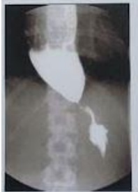
A Degeneração dos plexos nervosos do esôfago, resultando em hipertonia do esfíncter esofagiano inferior.
B Motilidade adequada do esôfago, conforme demonstrado pela chegada do contraste ao estômago sem dificuldade.
C Atrofia da musculatura lisa dos dois terços inferiores do esôfago e do esfíncter esofagiano inferior, com substituição por fibrose.
D Contrações sequenciais de alta pressão, com relaxamento normal do esfíncter esofagiano inferior.
Questão 15 · Manometria Esof ágica · 4000189939O exame padrão-ouro para o diagnóstico da acalasia esofágica é
A manometria esofágica.
B endoscopia digestiva alta com biópsia do esôfago distal.
C ecoendoscopia digestiva alta.
D tomografia de tórax com contraste iodado.
E esofagograma com contraste iodado.
Questão 16 · Manometria Esof ágica · 4000175779Qual dos achados abaixo é o mais específico para o diagnóstico de acalasia do esôfago?
A Disfagia de longa duração e regurgitação.
B Friabilidade e ulcerações da mucosa com restos alimentares à endoscopia.
C Alta frequência de ondas aperistálticas ou simultâneas à manometria.
D Dilatação do corpo e esôfago distal em “bico de pássaro” à esofagografia.
Questão 17 · Histologia · 4000175455Um homem de 75 anos, com disfagia progressiva há 8 meses, anorexia e emagrecimento, foi diagnosticado com câncer de terço médio do esôfago. No estadiamento, detectou-se disseminação local com invasão da aorta e brônquio-fonte esquerdo, metástases ganglionares mediastinais e fígado. Qual é a justi cativa para o comportamento agressivo desse tipo de câncer?
A estar localizado no terço médio do esôfago
B o tipo histológico mais comum ser o adenocarcinoma
C estar relacionado com o esôfago de Barrett
D ausência da camada serosa do esôfago
Questão 18 · Tratamento Cirúrgico do Megaesôf ago NãoAvançado · Tratamento Cirúrgico · 4000175241Paciente do sexo masculino, com 26 anos vem à consulta com suspeita de acalasia do esôfago. O que é considerado correto?
A a disfagia decorrente da acalasia do esôfago no jovem, não é progressiva.
B a acalasia da cárdia é caracterizada por hipertonia do corpo esofágico e hipotonia do esfíncter esofágico inferior.
C a dilatação endoscópica associada à injeção submucosa da enzima botulínica está indicada nos casos de dólico- megaesôfago.
D a cirurgia de Serra Dória é atualmente a cirurgia mais realizada nos casos de megaesôfago graus I a III.
E a esofagomiotomia de Heller-Pinotti realizada por videolaparoscopia é o procedimento cirúrgico de escolha nos graus iniciais (I e II).
Questão 19 · Manometria Esof ágica · 4000173533Mulher, 48 anos. História de disfagia progressiva para líquidos e sólidos há 2 anos. Perda não intencional de peso. Traz esofagograma com estreitamento distal “bico de pássaro”. Teste de Machado-Guerreiro negativo. Nasceu e mora no Recife. A manometria evidencia relaxamento incompleto do esfíncter inferior, ausência de peristalse e atividade contrátil do corpo esofágico. De acordo com a classificação Chicago, é CORRETO afirmar que a paciente apresenta
A doença de Chagas grau I.
B acalasia tipo I.
C acalasia tipo II.
D acalasia tipo III.
E doença de Chagas grau II.
Questão 20 · Síndrome de Boerhaave · 4000171049Uma paciente de 27 anos de idade, 46kg, tabagista, dependente química, apresenta-se ao serviço de emergência relatando quadro de episódios repetidos de vômitos, dor retroesternal, disfagia e hematêmese iniciados há 24 horas. No momento, apresenta-se com mal estar, temperatura axilar = 38,5ºC, dor retroesternal e torácica, além de taquicardia, taquipneia e sudorese. Considerando o quadro clínico descrito, o provável diagnóstico é de
A laceração de Mallory-Weiss.
B perfuração de úlcera gástrica na junção esofagogástrica.
C ruptura aguda esofágica.
D neoplasia da junção esofagogástrica com invasão de estruturas adjacentes.
E infarto agudo do miocárdio (IAM) em paciente jovem.
Questão 21 · Tratamento Cirúrgico do Megaesôf ago Avançado · 4000170991Mulher de 49 anos apresenta acalasia de longa data, tratada com Evoluiu com estenose não passível de tratamento endoscópico e perda ponderal importante. Nesse caso, o melhor tratamento consiste na realização de:
A cardiectomia com interposição jejunal
B cardioplastia à Thal-Hatafuku
C esofagectomia transhiatal
D jejunostomia alimentar
Questão 22 · Manometria Esof ágica · 4000170457Um paciente de 45 anos de idade compareceu à consulta com queixa de disfagia. Refere que apresenta disfagia para alimentos sólidos, de início há sete meses, e de caráter progressivo, atualmente com di culdade de ingestão de líquidos. O esofagograma baritado é normal e não apresenta megaesôfago. A manometria esofágica apresenta aperistalse no corpo esofágico e hipertonia do esfíncter esofágico inferior. Nesse caso clínico, o diagnóstico mais provável é
A hérnia de hiato esofágico.
B espasmo esofagiano difuso.
C esôfago em quebra-nozes.
D doença do refluxo gastroesofágico.
E acalasia.
Questão 23 · Manometria Esof ágica · 4000169769Paciente mulher, de 66 anos, procura assistência médica devido ao quadro de disfagia progressiva e perda de peso de, aproximadamente, 8%. Refere que o quadro disfágico se iniciou há pouco mais de 6 anos, porém se intensi cou há 6 meses, evoluindo rapidamente de sólido para líquido. De acordo com o quadro clínico, assinale a afirmativa correta.
A Considerando uma das principais hipóteses diagnósticas, a manometria esofágica pode mudar a conduta cirúrgica.
B A realização de endoscopia tem a finalidade exclusiva de excluir refluxo avançado.
C Dentre as condutas iniciais, a internação, para resolução cirúrgica, se impõe, a fim de evitar maior estresse metabólico.
D Segundo a avaliação subjetiva global, a realização de terapia nutricional parenteral é necessária devido ao quadro de desnutrição grave.
Questão 24 · Manif estações Clínicas · Disf agia Esof ágica Disf agia de Condução · 4000169397Considerando o exame acima apresentado, assim como seus achados, é correto a rmar que o mais provável sintoma do paciente seria

A dor abdominal.
B pirose.
C dispepsia.
D odinofagia.
E disfagia.
Questão 25 · Acalásia Secundária Chagásica · Tratamento · Indicações · 4000169042Uma senhora idosa, demenciada, tem diagnóstico de dolicomegaesôfago. Foi encaminhada ao serviço de endoscopia para passagem de sonda nasoenteral para alimentação, mas apresentou parada cardiorrespiratória e o procedimento não pôde ser feito. Reanimada, foi encaminhada à unidade de terapia intensiva e se recuperou. Tem cardiopatia chagásica. Está em nutrição parenteral desde que foi tentada a passagem da sonda enteral. Quanto à nutrição desta paciente, é correto afirmar:
A Deve-se tentar novamente passar sonda enteral.
B É recomendável fazer gastrostomia, preferencialmente endoscópica.
C É melhor manter a nutrição parenteral.
D Deve ser feita a operação de Serra-Dória.
E Devem ser adotadas medidas proporcionais.
Questão 26 · Tratamento Cirúrgico do Megaesôf ago NãoAvançado · Tratamento Cirúrgico · 4000167513Paciente de 50 anos relata história de disfagia progressiva nos últimos dois anos. Queixa-se ainda de regurgitação de alimentos não digeridos. A manometria esofageana mostra aumento da pressão do esfíncter esofagiano inferior com ausência de relaxamento à deglutição. O tratamento cirúrgico mais adequado deve ser realizado através de
A toupet por laparoscopia.
B heller e fundoplicatura.
C nissen curto posterior.
D dor anterior amplo.
E floppy nissen.
Questão 27 · Tratamento · Dilatação Pneumática · 4000166949A acalasia é um distúrbio de motilidade esofágica congênito, caracterizado por peristaltismo esofágico defeituoso e falta de relaxamento do esfíncter esofágico inferior durante a deglutição. O tratamento não operatório mais e caz para o distúrbio apresentado é:
A Bloqueadores dos canais de cálcio.
B Toxina botulínica.
C Dilatação pneumática.
D Esofagomiotomia videolaparoscópica.
Questão 28 · Manif estações Clínicas · Tratamento Cirúrgico do Megaesôf ago NãoAvançado · 4000165619Mulher, 46 anos de idade, refere dor torácica e regurgitação após refeições há 2 anos, com piora progressiva. Quando tem dor, apresenta melhora após a ingestão de líquidos. A queixa é mais intensa após refeições sólidas, evitando alimentos com esta consistência. Associadamente tem regurgitação durante o sono. Perdeu 5 Kg (IMC atual: 20 kg/m²). Realizou endoscopia digestiva alta, com achado de esofagite erosiva distal leve (grau A de Los Angeles) e gastrite erosiva leve de antro. Iniciou uso pantoprazol sem melhora dos sintomas. Retornou à consulta, quando foi solicitada uma radiografia contrastada de esôfago, estômago e duodeno. Considerando a principal hipótese diagnóstica, qual é o tratamento?

A Esofagectomia subtotal.
B Hiatoplastia e fundoplicatura parcial.
C Hiatoplastia e fundoplicatura total.
D Cardiomiotomia e fundoplicatura parcial.
Questão 29 · Hérnia Hiatal por Rolamento Paraesof ágica ou Tipo II · Tratamento Cirúrgico da DRGE · 4000164679Tratamento Clínico da DRGE Uma paciente, feminina, 75 anos, IMC: 32, sem outras comorbidades, vem ao consultório médico com queixa de azia e quadro dispéptico. A azia tem melhora com inibidor de bomba protônica em dose de manutenção. Após anamnese e exame físico, foi solicitada uma endoscopia alta que evidenciou uma hérnia hiatal de deslizamento, com a junção esofago- gástrica a 5 cm do pinçamento diafragmático. Assinale a alternativa correta a respeito desta patologia
A As hérnias hiatais do tipo III são aquelas em que existe a hérnia de deslizamento e outras estruturas associadas; por exemplo, o grande omento
B Apenas 10% de todas as hérnias hiatais são do tipo I, e poucas precisam de tratamento cirúrgico.
C A grande maioria das hérnias paraesofágicas são do tipo II, em torno de 90%. Apenas uma minoria das hérnias paraesofágicas são do tipo III.
D Nesta paciente, como ele controla a sintomatologia do refluxo gastroesofâgico com inibidor da bomba protônica, a cirurgia da hérnia hiatal não está indicada, sendo melhor manter o tratamento conservador
E As hérnias hiatais do tipo II, assintomáticas, devem sempre ser operadas, independente da idade e condições clínicas do paciente, devido ao risco de isquemia e perfuração.
Questão 30 · Manometria Esof ágica · Tratamento Cirúrgico da DRGE · Disf agia · 4000164670Assinale a alternativa que indica corretamente o principal fator de risco para a disfagia permanente pós fundoplicatura de Nissen.
A Presença de disfagia pré-operatória
B Regurgitação como sintoma principal
C PHmetria com índice de sintomas positivo
D Seriografia mostrando hérnia de hiato paraesofágica
E Presença de distúrbio motor inespecífico à manometria
Questão 31 · Disf agia Esof ágica Disf agia de Condução · Exames Endoscópicos · 4000163651Na investigação de um paciente com queixa de disfagia, qual exame serve para orientar condutas clínicas e cirúrgicas, demonstrando pontos de estenose, estase, aspecto da mucosa e coleta de fragmentos. Qual dos exames atende a essa necessidade?
A Manometria de alta resolução.
B Endoscopia digestiva alta.
C Cintilografia esofágica.
D Esofagograma digital.
Questão 32 · Tratamento Cirúrgico · 4000174180Homem de 71 anos queixa-se de tosse irritativa, salivação excessiva, disfagia, regurgitação constante, mau hálito e alterações da voz há 8 meses. Na investigação diagnóstica, encontrou-se o achado (diâmetro = 2,6 cm), demonstrado a seguir. A conduta mais indicada para esse paciente é:
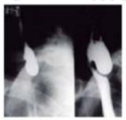
A diverticulectomia isolada e rafia da base em dois planos de sutura, com fio monofilamentar inabsorvível.
B diverticulectomia endoscópica com grampeamento da base com clips metálicos sem miotomia.
C diverticulopexia com miotomia incompleta, usando-se laser de argônio para melhor cicatrização.
D diverticulectomia ou diverticuloplexia com miotomia proximal e distal dos músculos tireofaríngeo e cricofaríngeo.
E procedimento endoscópico de Dohlman, técnica mais indicada pelo risco cirúrgico do paciente.
Questão 33 · Hérnias Hiatais · 4000173629Mulher, 64 anos, queixa de dor retroesternal leve, náusea e tosse seca pós-prandial há 2 anos. Você solicita exame radiológico de tórax cujo resultado é a seguinte imagem abaixo. Qual diagnostico mais provável para essa paciente?
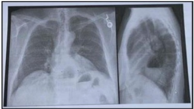
A Neoplasia esofágica
B Hérnia gástrica hiatal
C Abscesso pulmonar
D Cavitação pulmonar
E Derrame pericárdico
Questão 34 · Divertículo de Zenker · 4000172819É o divertículo faringoesofágico mais comum encontrado hoje em dia. Apresenta-se, geralmente, em pacientes idosos na sétima década de vida e tem sido postulado como resultado de perda da elasticidade tecidual e tônus muscular com a idade. É encontrado especificamente herniando no triângulo de Killian.
A Divertículo de Meckel.
B Divertículo de Zenker.
C Divertículo de Hinchey.
D Divertículo de Hiss.
Questão 35 · Tratamento Cirúrgico do Megaesôf ago Avançado · Esof agograma Baritado · 4000171573Paciente TSGV, sexo masculino, 33 anos, procura ambulatório de cirurgia digestiva, com queixa de disfagia há cerca de 4 anos, com piora no último ano acompanhada de perda ponderal importante (cerca de 10kg). Foi solicitado exame contrastado de esôfago, que evidenciou megaesôfago grau 3 (mostrado abaixo). Sobre a doença e o tratamento, é incorreto afirmar:
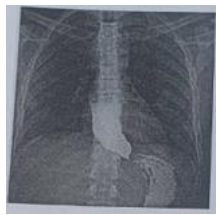
A Acalásia é o distúrbio esofágico primário de motilidade mais comum, podendo ser idiopática ou chagásica.
B Trata-se de uma doença motora (neurogênica) em que há o relaxamento parcial ou ausente do EEI (esfíncter esofágico inferior).
C Dilatação endoscópica é indicada para megaesôfago graus I e II, para melhorar quadro nutricional de pacientes sem condição cirúrgica, para pacientes operados, porém com sintomas persistentes e para gestantes.
D Cirurgia de Heller-Pinotti indicada no tratamento cirúrgico para pacientes com megaesôfago grau III e IV; consiste na cardiomiotomia com confecção de válvula antirrefluxo parcial.
Questão 36 · Acalásia Primária Idiopática · Def inição e Fisiopatologia · 4000170168Paciente com 45 anos de idade, sexo masculino com queixas de dor e di culdades para engolir alimentos sendo necessário a ingestão de água para ajudar a engolir os alimentos, relata também que de vez em quando apresenta o retorno de alimentos não digeridos de odor fétido, referindo azia e tosse noturna. Relata perda de peso nos últimos meses. O exame de osofagograma revela imagem com aparência de bico de pássaro e a manometria esofágica revela um esfíncter esofágico inferior hipertenso que não relaxa com a deglutição e o corpo do esófago apresenta pressão acima da basal, contrações simultâneas sem evidência de peristaltismo progressivo e ondas de contrações de baixa amplitude. Assinale a alternativa correta com relação à principal hipótese diagnóstica do caso.
A Acalasia
B Carcinoma Esofágico.
C Refluxo Gastroesofágico.
D Divertículo Esofágico.
Questão 37 · Fisiopatologia e Fatores de Risco · Hérnias Hiatais · 4000146991Assinale a alternativa que corresponde ao tipo de hérnia mais comum que gera sintomas de refluxo gastroesofágico.
A Hérnia hiatal por deslizamento.
B Hérnia de Spiegel.
C Hérnia de Zenker.
D Hérnia epigástrica.
E Hérnia hiatal paraesofágica.
Questão 38 · Macroanatomia · 4000146990Assinale a alternativa que corresponde aos 3 locais anatômicos de estreitamento do esôfago.
A Constrição pelo músculo milo-hióideo, constrição traqueal e constrição gastroesofágica.
B Constrição pelo músculo cricofaríngeo, constrição broncoaórtica e constrição diafragmática.
C Constrição pelo músculo omo-hióideo, constrição brônquica e constrição pericárdica.
D Constrição pelo músculo cricofaríngeo, constrição traqueal e constrição gastroesofágica.
E Constrição pelo músculo tireofaríngeo, constrição broncoaórtica e constrição gastroesofágica.
Questão 39 · Esof agograma Baritado · Endoscópico · Manometria Esof ágica · 4000146164Paciente do sexo masculino, 35 anos de idade, com história de disfagia progressiva e perda de peso (19 kg) há três meses. Nega história de doença do re uxo gastroesofageano, doença de Chagas, tabagismo e etilismo. Realizou endoscopia digestiva alta que evidenciou dilatação esofágica, porém ausência de tumores ou ulcerações esofagogástricas e sem aparente compressão extrínseca do esôfago. Em relação aos métodos diagnósticos e manejo de acalásia, marque ""V"" para verdadeiro e ""F"" para falso: ( ) Os achados clássicos na seriogra a esofagogástrica nos pacientes com acalásia são o afunilamento distal do esôfago (lesão em ""bico de pássaro"") e dilatação proximal do órgão e, nos casos mais avançados, aparência de sigmoide com estase alimentar. ( ) Segundo a classificação de Chicago para acalásia esofágica, os pacientes estrati cados como tipo III apresentam melhores resultados com a miotomia cirúrgica que com a miotomia endoscópica peroral. ( ) O quadro manométrico clássico é caracterizado pela incapacidade de relaxamento do esfíncter inferior do esôfago durante a deglutição e aperistalse esofágica. ( ) A cirurgia de Heller para o tratamento da acalásia é caracterizada pela realização de uma miotomia esofagogástrica associada a hiatoplastia diafragmática e a confecção de uma válvula antirrefluxo de 360° envolvendo o esôfago distal. Assinale a sequência CORRETA:
A V - F - V - F
B F - F - F - V
C V - F - V - V
D F - V - F – F
Questão 40 · Espasmo Esof agiano Dif uso EED · 4000146094A seriogra a contrastada abaixo de esôfago, estômago e duodeno tem maiores chances de serem encontradas em pacientes com o diagnóstico de:
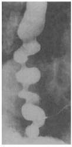
A Acalásia.
B Carcinoma espinocelular.
C Adenocarcinoma.
D Espasmo esofágico difuso.
Questão 41 · Disf agia Esof ágica Disf agia de Condução · Acalásia Secundária Chagásica · 4000145878Um paciente de 55 anos de idade, proveniente da Bahia, refere disfagia lentamente progressiva de sólido para líquido, dor retroesternal, queimação e regurgitação, associadas à perda ponderal. Tem sorologia positiva para Chagas. Com base nessa situação hipotética, assinale a alternativa que apresenta os exames que devem ser solicitados para a confirmação diagnóstica.
A endoscopia digestiva alta e pHmetria
B endoscopia digestiva alta, esofagograma, manometria esofágica e pHmetria
C endoscopia digestiva alta, esofagograma e manometria esofágica
D endoscopia digestiva alta, manometria esofágica e tomografia de tórax com contraste, via oral
E esofagograma, manometria esofágica e pHmetria
Questão 42 · Divertículo de Zenker · 4000145811O divertículo de Zenker é uma patologia encontrada em pacientes idosos que se localiza no seguinte órgão:
A ceco
B esôfago
C cólon sigmoide
D intestino delgado
Questão 43 · Divertículo de Zenker · 4000145749Paciente de 72 anos chega ao consultório se queixando de disfagia. Relata também que vem apresentando tosse, salivação excessiva, regurgitação de alimentos mal digeridos e halitose. Qual o provável diagnóstico?
A Divertículo de Meckel.
B Úlcera gástrica.
C Volvo intestinal.
D Divertículo de Zenker.
E Divertículo epifrênico.
Questão 44 · Divertículos Esof ágicos · 4000145486JPR, 72 anos, sexo masculino, queixando disfagia progressiva inicialmente para sólidos, halitose, regurgitação alimentar, tosse crônica e emagrecimento. Foi atendido por gastroenterologista que solicitou endoscopia digestiva alta. O endoscópio progrediu até 25cm da arcada dentária superior e atingiu cavidade em fundo cego com restos alimentares. Foi solicitado exame contrastado do esôfago que pode ser visto abaixo. Qual é o diagnóstico MAIS PROVÁVEL e a MELHOR CONDUTA para o caso?
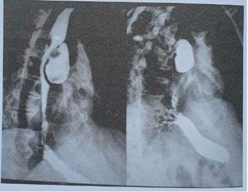
A A imagem é compatível com megaesôfago e a endoscopia deve ser repetida para realização de dilatação do esfíncter esofágico inferior
B A imagem é compatível com neoplasia de esôfago e fístula esofagobrônquica, e está indicada a introdução de prótese esofágica expansível
C A imagem é de um grande divertículo do esôfago médio e a ressecção está indicada porque o mesmo está comprimindo o lúmen do órgão
D Trata-se de divertículo de Zenker e o tratamento implica em miotomia do músculo cricofaríngeo
Questão 45 · Divertículo de Zenker · 4000145148O divertículo faringoesofágico (de Zenker) é o mais comum divertículo esofágico encontrado hoje em dia. Ele é encontrado, especificamente, herniando no triângulo de Killian que apresenta os limites anatômicos dos músculos.
A Tireofaríngeo e cricofaríngeo.
B Tireofaríngeo e aritenoides.
C Cricoaritenóide lateral e posterior.
D Cricofaríngeo e cricoaritenóide posterior.
Questão 46 · Divertículo de Zenker · Esof agograma Baritado · 4000144767Mulher, 88 anos de idade, com quadro de disfagia, regurgitação de alimentos não digeridos, murmúrios no pescoço após alimentação, halitose e emagrecimento, foi admitida na UTI por broncoaspiração e pneumonia. Baseado na história e na imagem abaixo do deglutograma, assinale a alternativa com o diagnóstico mais provável.
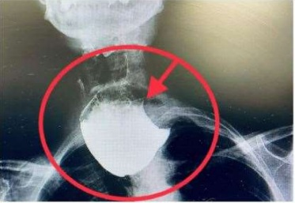
A Divertículo de Zencker.
B Tumor do mediastino.
C Bócio mergulhante de tireoide.
D Higroma cístico.
Questão 47 · Síndrome de Boerhaave · 4000143558Um homem de 45 anos em um churrasco ingeriu rapidamente grande quantidade de cerveja e alimentos. Subitamente começou a presentar vômitos violentos, dor em mediastino, odinofagia e dispneia. Qual o diagnóstico provável?
A Pancreatite aguda.
B Síndrome de Boerhaave.
C Tromboembolismo pulmonar.
D Pneumotórax espontâneo.
E Angina mesentérica.
Questão 48 · Disf agia Esof ágica Disf agia de Condução · Acalásia Megaesôf ago · 4000142469Paciente masculino, 32 anos, com história de disfagia progressiva há 2 anos, inicialmente para sólidos, que evoluiu para pastosos e líquidos, submetido ao exame contrastado do esôfago que evidencia dilatação do órgão para 4cm, retardo do esvaziamento e afilamento distal. Quais são o diagnóstico e tratamento mais prováveis?
A Doença do refluxo gastresofágico e hernioplastia hiatal com fundoplicatura.
B Megaesôfago e cardiomiotomia.
C Megaesôfago e hernioplastia hiatal com fundoplicatura.
D Doença do refluxo gastroesofágico e cardiomiotomia.
E Neoplasia anular do esôfago.
Questão 49 · Def inição e Fisiopatologia · 4000138927Um paciente do sexo masculino, com 60 anos de idade, procurou ambulatório com queixa de disfagia progressiva, existente havia 10 anos, com piora importante 2 meses antes desse atendimento ambulatorial. No momento, queixava-se de que não conseguia se alimentar nem de líquidos, com perda ponderal de 8 kg no período. Como antecedentes importantes, apresentava uma carga tabágica de 20 maços/ano, etilismo de meio litro de destilados ao dia, epidemiologia positiva para doença de Chagas, sem históricos de câncer na família. A partir do caso clínico hipotético apresentado, julgue o item a seguir. Os sinais e sintomas da acalasia são causados principalmente pela falha de relaxamento do esfíncter esofagiano inferior durante a deglutição.
A Certo.
B Errado.
Questão 50 · Disf agia Esof ágica Disf agia de Condução · Acalásia Secundária Chagásica · 4000138926Neoplasias Malignas do Esôf ago Um paciente do sexo masculino, com 60 anos de idade, procurou ambulatório com queixa de disfagia progressiva, existente havia 10 anos, com piora importante 2 meses antes desse atendimento ambulatorial. No momento, queixava-se de que não conseguia se alimentar nem de líquidos, com perda ponderal de 8 kg no período. Como antecedentes importantes, apresentava uma carga tabágica de 20 maços/ano, etilismo de meio litro de destilados ao dia, epidemiologia positiva para doença de Chagas, sem históricos de câncer na família. A partir do caso clínico hipotético apresentado, julgue o item a seguir. O tratamento cirúrgico deve ser realizado de imediato, devido à impossibilidade de ingesta oral pelo paciente.
A Certo.
B Errado.
Questão 51 · Disf agia Esof ágica Disf agia de Condução · Carcinoma de Células Escamosas CEC · 4000138925Um paciente do sexo masculino, com 60 anos de idade, procurou ambulatório com queixa de disfagia progressiva, existente havia 10 anos, com piora importante 2 meses antes desse atendimento ambulatorial. No momento, queixava-se de que não conseguia se alimentar nem de líquidos, com perda ponderal de 8 kg no período. Como antecedentes importantes, apresentava uma carga tabágica de 20 maços/ano, etilismo de meio litro de destilados ao dia, epidemiologia positiva para doença de Chagas, sem históricos de câncer na família. A partir do caso clínico hipotético apresentado, julgue o item a seguir. Câncer de esôfago é uma das possíveis hipóteses diagnósticas, pois o paciente apresenta vários fatores de risco para essa doença.
A Certo.
B Errado.
Questão 52 · Disf agia Esof ágica Disf agia de Condução · Acalásia Secundária Chagásica · Tratamento · 4000138924Um paciente do sexo masculino, com 60 anos de idade, procurou ambulatório com queixa de disfagia progressiva, existente havia 10 anos, com piora importante 2 meses antes desse atendimento ambulatorial. No momento, queixava-se de que não conseguia se alimentar nem de líquidos, com perda ponderal de 8 kg no período. Como antecedentes importantes, apresentava uma carga tabágica de 20 maços/ano, etilismo de meio litro de destilados ao dia, epidemiologia positiva para doença de Chagas, sem históricos de câncer na família. A partir do caso clínico hipotético apresentado, julgue o item a seguir. A sorologia para doença de Chagas é essencial para a definição do tipo de tratamento a ser realizado nesse paciente.
A Certo.
B Errado.
Questão 53 · Esof agograma Baritado · Disf agia Esof ágica Disf agia de Condução · Neoplasias Malignas do Esôf ago · 4000138922Um paciente do sexo masculino, com 60 anos de idade, procurou ambulatório com queixa de disfagia progressiva, existente havia 10 anos, com piora importante 2 meses antes desse atendimento ambulatorial. No momento, queixava-se de que não conseguia se alimentar nem de líquidos, com perda ponderal de 8 kg no período. Como antecedentes importantes, apresentava uma carga tabágica de 20 maços/ano, etilismo de meio litro de destilados ao dia, epidemiologia positiva para doença de Chagas, sem históricos de câncer na família. A partir do caso clínico hipotético apresentado, julgue o item a seguir. O primeiro exame a ser solicitado para esclarecimento diagnóstico é o esofagograma.
A Certo.
B Errado.
Questão 54 · Divertículo de Zenker · 4000138041O esôfago passa por alterações características com o envelhecimento que podem resultar no aparecimento de divertículos de Zenker Dentre as abaixo, qual a alternativa correta sobre esta condição?
A Divertículos de
B É encontrado especificamente herniando no triângulo de
C São categorizados como divertículos verdadeiros.
D O divertículo de
E O diagnóstico do divertículo de
Questão 55 · Hérnia Hiatal por Deslizamento Tipo I · 4000133711As hérnias de hiato classificadas como tipo I são caracterizadas por deslocamento superior:
A da cárdia no mediastino anterior.
B da cárdia no mediastino posterior.
C tanto da cárdia quanto do fundo gástrico.
D do fundo gástrico e pelo posicionamento normal da cárdia .
Questão 56 · Investigação Complementar · 4000133291Homem 65 anos de idade apresenta-se na unidade de saúde com quadro de regurgitação noturna de comida há muitos meses. Os sintomas têm se tornado pior recentemente, fazendo-o levantar a noite. Nega odinofagia ou disfagia. Sua esposa percebeu que sua voz também mudou e que ele esta com halitose. Ele a rma não ter outros problemas médicos, mas que seus sintomas atuais têm afetado sua qualidade de vida. Qual dos seguintes é o estudo mais adequado para o diagnóstico?
A PHmetria por 24 horas.
B Endoscopia digestiva alta.
C Esofagograma baritado.
D Manometria esofagiana.
E TC de tórax.
Questão 57 · Hérnia Hiatal por Deslizamento Tipo I · Cirurgia · 4000131237Analise a imagem a seguir. Após o diagnóstico, o paciente em questão deverá ser submetido a uma
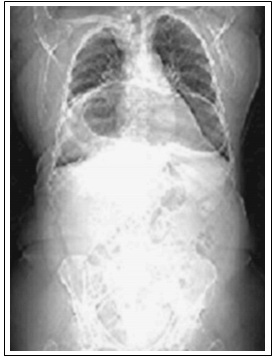
A drenagem torácica fechada.
B punção pericárdica.
C hiatoplastia.
D laparotomia exploradora.
Questão 58 · Def inição e Fisiopatologia · 4000131026Radiologicamente, pode-se classificar o megaesôfago conforme o grau de dilatação. Existem várias classificações, a mais utilizada é a introduzida e difundida por Câmara Lopes e Ferreira Santos (1957) e Resende e colaboradores (1960). Assinale a alternativa correta:
A Grau I: dilatação até 4 cm de diâmetro transverso; podem ser notadas ondas terciárias e retardo do esvaziamento esofagiano.
B Grau I: dilatação até 4 cm de diâmetro transverso; podem ser notadas ondas terciárias sem nenhum retardo do esvaziamento esofagiano.
C Grau II: Dilatação entre 4 e 7 cm de diâmetro transverso, observando-se nível líquido de bário, hipertonia e ondas primárias.
D Grau III: Dilatação entre 4 e 7 cm de diâmetro transverso, observando-se nível líquido de bário, hipotonia e ondas terciárias.
Questão 59 · Tratamento Cirúrgico do Megaesôf ago Avançado · 4000129587Tratamento Cirúrgico do Megaesôf ago NãoAvançado Qual a melhor alternativa de tratamento para paciente portador de megaesôfago chagásico grupo III de Rezende, com 40 anos, sem comorbidades?
A Cirurgia de Nissen.
B Esofagogastroplastia.
C Cirurgia de Serra-Dória.
D Cirurgia de Heller-Pinotti.
Questão 60 · Manif estações Clínicas · Disf agia Esof ágica Disf agia de Condução · Acalásia Megaesôf ago · 4000128405Paciente com moderada disfagia para líquidos deve ter como suspeita clínica inicial:
A Doença do Refluxo Gastroesofágico.
B Neoplasia de esôfago.
C Acalásia.
D Hipertrofia amigdaliana.
E Compressão extrínseca do esôfago.
Questão 61 · Disf agia Orof aríngea Disf agia Cervical · Divertículo de Zenker · 4000125726Sobre um paciente com queixa de disfagia alta e com halitose importante, podemos fazer hipótese diagnóstica de
A refluxo gastroesofágico.
B acalásia.
C neoplasia de esôfago.
D divertículo de Zenker.
E esofagite.
Questão 62 · Síndrome de Boerhaave · 4000124260Paciente com suspeita de síndrome de Boerhaave. Qual melhor abordagem na investigação radiológica?
A Exame com contraste de sulfato de bário.
B Exame com contraste hidrossolúvel.
C Realizar tomografia com contraste radioativo.
D Deve ser utilizado contraste hidrossolúvel.
E O uso de exame contrastado está formalmente contraindicado.
Questão 63 · Acalásia Primária Idiopática · Def inição e Fisiopatologia · Acalásia Megaesôf ago · 4000124177São achados encontrados na acalasia de esôfago, chagásica ou idiopática, EXCETO:
A perda ponderal.
B diminuição do peristaltismo ou até aperistalse.
C contrações terciárias associada à angina.
D regurgitação de alimentos não digeridos.
E esfíncter esofagiano inferior com pressão basal elevada.
Questão 64 · Disf agia Esof ágica Disf agia de Condução · Acalásia Megaesôf ago · 4000118723Paciente comparece ao serviço de emergência por disfagia e dor torácica, traz um raio-x de tórax realizado em outro serviço com dupla silhueta cardíaca e ausência de bolha gástrica, hemograma com discreta anemia sem leucocitose e eletrocardiograma com bloqueio de ramo direito. Qual o diagnóstico e causa dos sintomas?
A Acalasia com disfagia e dor torácica pela dismotilidade esofágica.
B Dissecção da aorta com disfagia por compressão esofágica e dor por distensão da camada muscular da aorta.
C Hérnia de hiato gigante com disfagia pela compressão do colo da hérnia ao nível do hiato e dor pela arritmia por compressão atrial pela hérnia.
D Infarto agudo do miocárdio em fase inicial sem alterações isquêmicas ainda ao eletrocardiograma.
Questão 65 · Síndrome de Boerhaave · 4000118685Paciente de 65 anos, chega ao PS com dor torácica após vômitos posteriormente à copiosa refeição. Ao exame físico está taquicárdico e taquipnêico com hálito etílico, sinal de Hamman presente. Raio-X de tórax mostra pequeno derrame pleural à esquerda. Qual o diagnóstico e exame para esse caso?
A Síndrome de Maalory Weis, endoscopia.
B Síndrome de Boerhaave, tomografia computadorizada.
C Síndrome de Plummer-Vinson, endoscopia.
D Infarto agudo do miocárdio, eletrocardiograma e enzimas cardíacas.
Questão 66 · Disf agia Esof ágica Disf agia de Condução · Acalásia Megaesôf ago · 4000116982Analise as afirmativas abaixo: I. O diagnóstico diferencial de disfagia é vasto sendo a acalasia uma das possibilidades; II. Ter epidemiologia positiva para Doença de Chagas associado com disfagia, apesar de sugerir, não obrigatoriamente implica causalidade; III. Em um paciente com megaesôfago que passe a cursar com piora da disfagia está afastada a possibilidade de neoplasia. Estão corretas as afirmativas:
A I e II
B II e III
C I e III
D I, II e III
E Somente a afirmativa II
Questão 67 · Manometria Esof ágica · Acalásia Megaesôf ago · 4000114427Mulher, 55 anos, procedente do Vale do Jequitinhonha, refere disfagia baixa há 2 anos, ora para alimentos sólidos, ora para líquidos, associada a emagrecimento de 6 kg no período. Informa morte súbita em dois irmãos e pai. Endoscopia digestiva alta sem alterações. Qual alteração manométrica é mais provável?
A Relaxamento transitório de esfíncter esofágico.
B Aumento da amplitude das contrações no corpo do esôfago.
C Aperistalse do corpo do esôfago.
D Hipotonia do esfíncter inferior esofágico.
Questão 68 · Carcinoma de Células Escamosas CEC · Acalásia Megaesôf ago · 4000113685Qual destas condições é fator de risco para carcinoma espinocelular de esôfago?
A Megaesôfago
B Esôfago de Barrett
C Síndrome de Boerhaave
D Anel de Schatzki
Questão 69 · Def inição e Fisiopatologia · 4000110034Paciente de 45 anos apresenta quadro crônico de disfagia e emagrecimento. Realizou uma endoscopia digestiva alta que evidenciou a presença de restos alimentares em esôfago distal sendo sugerido novo exame após passagem de sonda para limpeza do órgão. O endoscopista sugeriu o diagnóstico de megaesôfago. Assinale a alternativa correta em relação a essa patologia.
A O megaesôfago chagásico é uma síndrome disfágica provocada pela redução quantitativa dos plexos nervosos intramurais.
B A acalasia é uma alteração motora com relaxamento distal que promove dilatação e disfagia progressivas.
C Na doença de Chagas, ocorre uma disfunção dos plexos intramurais de Missner e Auerbach sem sua destruição.
D A disfunção do plexo mioentérico promove uma dilatação e afrouxamento da região do cárdia que se estende ao esôfago proximal com o passar do tempo.
E A destruição dos plexos nervosos do esôfago promove o relaxamento do cárdia e dilatação do esôfago que progride proximalmente.
Questão 70 · Gastroenterologia · Hérnias Hiatais · 4000109810Mulher de 60 anos de idade refere dor epigástrica, tosse e náuseas após as refeições há cerca de 1 ano. Realizou uma radiografia de tórax com a imagem abaixo: Qual é o diagnóstico mais provável?

A Neoplasia esofágica.
B Abscesso pulmonar.
C Hérnia gástrica hiatal.
D Tuberculose.
Questão 71 · Tratamento Cirúrgico da DRGE · Hérnia Hiatal por Deslizamento Tipo I · Cirurgia · 4000107703Mulher, 31 anos de idade, com queixa de pirose há cerca de 4 anos, com melhora após tratamento com 40mg de omeprazol ao dia. Mantém, no entanto, queixa importante de regurgitação e epigastralgia após se alimentar. Endoscopia digestiva alta mostra esofagite leve e hérnia de hiato, por deslizamento, de 4cm. Radiogra a contrastada do esôfago, estômago e duodeno revela hérnia de hiato, por deslizamento, de 4cm de extensão. Antecedentes pessoais: nega comorbidades, não faz uso regular de medicações, IMC = 27 kg/m². Assinale a alternativa correta.
A Cirurgia não deve ser indicada nesse momento, por se tratar de paciente com hérnia hiatal maior que 3cm.
B Considerando a boa resposta ao medicamento prescrito, deve-se manter omeprazol, dobrado a dosagem.
C A conduta para o caso deve ser Hiatoplastia com fundoplicatura por meio da técnica de Nissen.
D Deve ser indicada correção cirúrgica pela técnica de bypass gástrico em Y de Roux, uma vez que IMC > 25 kg/m², conforme evidências da literatura.
Questão 72 · Acalásia Secundária Chagásica · Cirurgia · Tratamento · 4000107685A forma mais comum de megaesôfago é a chagásica, diagnosticada, fundamentalmente, nas manifestações clínicas do paciente e no exame radiológico, o que permite classificar o megaesôfago. De acordo com a classificação de Rezende, a melhor terapêutica corresponde ao grau
A III / cardiomiotomia Heller-Pinoti.
B II / dilatação endoscópica.
C IV / dilatação endoscópica.
D II / cardiomiotomia Heller-Pinoti.
E II/ esofagectomia.
Questão 73 · Disf agia Orof aríngea Disf agia Cervical · Divertículo de Zenker · Esof agograma Baritado · 4000107676Homem, 88 anos, refere disfagia cervical, tosse, salivação excessiva, regurgitação espontânea de alimentos não digeridos, com odor fétido e halitose há 5 anos, com piora progressiva. A hipótese diagnóstica e o exame complementar são
A neoplasia de esôfago cérvico-torácico e esofagograma.
B divertículo de Zencker e esofagograma.
C doença do refluxo gastroesofágico e endoscopia digestiva alta.
D hérnia hiatal deslizante e endoscopia digestiva alta.
E divertículo de Meckel e endoscopia digestiva alta.
Questão 74 · Divertículo Epif rênico · Divertículos Esof ágicos · Divertículo de Tração Mesoesof ágico · 4000107525Considere um paciente do sexo masculino, de 68 anos, com história de disfagia que ocorre no meio da deglutição associada à halitose, perda ponderal e por vezes regurgitação, que foi encaminhado ao ambulatório para investigação com hipótese diagnóstica de divertículo de esôfago. Assinale a alternativa correta.
A Os divertículos de pulsão são considerados verdadeiros acometendo todas as camadas do esôfago.
B Os divertículos de tração são mais comuns na região faringoesofageana.
C Existe uma relação entre tuberculose pulmonar e o desenvolvimento do divertículo de Zenker.
D O divertículo de Zenker é considerado não verdadeiro e acomete a região faringoesofageana.
E Os divertículos epifrênicos são os mais comuns de serem encontrados.
Questão 75 · Síndrome de Boerhaave · 4000103635Homem de 29 anos deu entrada na UPA 24 horas após vômitos forçados e apresentou a tríade de Mackler, sendo reconhecida por um médico da emergência, que o encaminhou para o hospital de referência em cirurgia. Assinale a alternativa que corretamente corresponda à tríade de Mackler e ao que ela sinaliza.
A Vômito, dor torácica e enfisema de partes moles. Sinaliza ruptura espontânea esofágica.
B Náusea, vômito e dor torácica. Sinaliza ruptura espontânea esofágica.
C Vômito, dor torácica e hematêmese. Sinaliza laceração espontânea da mucosa esofágica.
D Dor torácica, enfisema de partes moles e sinal de Hamman. Sinaliza pneumomediastino espontâneo.
Questão 76 · Esof agograma Baritado · Endoscopia com Lugol · Manometria Esof ágica · 4000103006Você atende paciente de 32 anos, hígido, proveniente do interior do Ceará, com queixa de disfagia lentamente progressiva. Quais exames devem ser solicitados?
A Endoscopia digestiva alta com biópsia; tomografia computadorizada cervical de tórax e abdome superior; PETCT, broncoscopia.
B EED, pHmetria, sorologia para chagas, endoscopia digestiva alta com lugol.
C Eletromanometria esofágica, sorologia para chagas e endoscopia digestiva alta com azul de metileno.
D Exame contrastado do esôfago (EED), eletromanometria esofágica, sorologia para chagas, endoscopia com lugol.
Questão 77 · Disf agia Orof aríngea Disf agia Cervical · Divertículo de Zenker · 4000098106Sobre o Divertículo de Zenker, assinale a CORRETA:
A É um divertículo verdadeiro, localizado na parede posterior da faringe, na área de transição entre o músculo constritor inferior da faringe e o músculo cricofaríngeo.
B É originado através de defeito muscular na parede posterior da faringe, na área de transição entre o músculo constritor inferior da faringe e o músculo cricofaríngeo.
C Por tratar-se de lesão pré-neoplásica, deve-se sempre procurar focos sincrônicos na investigação pré-operatória.
D É um pseudo-divertículo, localizado na transição esofagogástrica, região hipotônica do esfíncter esofagiano inferior.
Questão 78 · Disf agia Orof aríngea Disf agia Cervical · Divertículo de Zenker · 4000093125Assinale, entre as patologias abaixo, a que tem como referência anatômica o Triângulo de Killian.
A Hérnia Inguinal Direta
B Hérnia Inguinal Indireta
C Divertículo de Zencker
D Divertículo de Tração ou verdadeiro do esôfago
E Gastrinoma na Neoplasia Endócrina Múltipla Tipo 1 (MEN 1)
Questão 79 · Tratamento Cirúrgico · 4000084544A acalasia afeta principalmente mulheres jovens e tem diferentes causas. Os sintomas clássicos são disfagia, regurgitação e perda ponderal. O tratamento clínico pode oferecer alívio em curto prazo. Nesse caso, o procedimento de escolha, com efeito mais duradouro, para o tratamento da acalasia é:
A esofagectomia endoscópica
B miotomia endoscópica per-oral
C miotomia de Heller modificada via laparoscopia
D esofagogastrectomia modificada via laparoscopia
Questão 80 · Divertículo de Zenker · Macroanatomia · 4000084010O divertículo esofágico de Zenker é uma herniação que ocorre através do triângulo de:
A Hasselbach
B Callot
C Budd
D Killian
Questão 81 · Síndrome de Boerhaave · Perf uração de Esôf ago · Exames Radiológicos · 4000077336Um homem de 56 anos deu entrada na emergência, após muitos episódios de vômitos, com quadro de dor torácica baixa, rigidez abdominal, en sema subcutâneo e hipotensão. A radiogra a de tórax mostrou derrame pleural à esquerda e pneumomediastino. O diagnóstico é
A síndrome de Mallory-Weiss.
B acalásia.
C síndrome de Boerhaave.
D ruptura de varizes de esôfago.
E DRGE agudizada.
Questão 82 · Espasmo Esof agiano Dif uso EED · Exames Radiológicos · 4000075740Qual patologia abaixo apresenta, tipicamente na radiogra a contrastada com bário, o esôfago em saca-rolhas e pseudodivertículos em um paciente com disfagia?
A Espasmo esofágico.
B Esclerodermia.
C Miastenia grave.
D Corpo estranho.
E Acalasia.
Questão 83 · Perf uração Iatrogênica · 4000072807A principal causa de perfuração esofágica é:
A Tumor perfurado.
B Iatrogênica.
C Síndrome de Boerhaave.
D Trauma perfurante.
E Ingestão de soda cáustica.
Questão 85 · Acalásia Secundária Chagásica · 4000062949Paciente, 34 anos, sexo masculino, apresentando disfagia de condução, regurgitação e emagrecimento. A endoscopia digestiva alta mostrou esofagite, a esofagogra a baritada mostrou estreitamento em bico de pássaro e a esofagomanometria evidenciou falha do relaxamento do EEI e aumento da pressão intraluminal do corpo esofágico. Foi diagnosticado acalásia. Qual exame laboratorial pode auxiliar no diagnóstico da doença de Chagas?
A ELISA.
B Imunofluorescência direta.
C EPF
D Hemograma completo.
Questão 86 · Divertículo de Tração Mesoesof ágico · 4000053598Os divertículos de tração do esôfago são causados ou originados principalmente por qual dos fatores relacionados abaixo?
A Por serem divertículos falsos ou de pulsão originam-se da fraqueza da camada muscular do corpo do esôfago.
B Por serem divertículos falsos ou de pulsão originam-se da fraqueza da camada muscular do segmento distal do esôfago.
C Por serem divertículos falsos ou de pulsão originam-se da fraqueza da camada muscular do segmento proximal do esôfago.
D Por serem divertículos verdadeiros originam-se pela retração da camada muscular do segmento proximal do esôfago motivada pela cicatrização fibrótica retrátil crônica de processos inflamatórios da região.
E Por serem divertículos verdadeiros originam-se pela retração da camada muscular do corpo do esôfago motivada pela cicatrização fibrótica retrátil crônica de processos inflamatórios da região.
Questão 87 · Manometria Esof ágica · 4000053593Na investigação diagnóstica dos distúrbios do esôfago, qual o exame que propicia um número importante de informações sobre a função do corpo esofágico e do es ncter inferior do esôfago? Também permite ao cirurgião excluir distúrbios primários de motilidade como acalasia, além de possibilitar planejamento do melhor procedimento cirúrgico.
A PHmetria esofágica.
B Seriografia esofágica.
C Arteriografia esofágica.
D Manometria esofágica.
E Endoscopia digestiva alta.
Questão 88 · Cirurgia · Tratamento Cirúrgico · 4000047254O melhor tratamento para um paciente portador de acalasia de esôfago com megaesôfago grau IV de Rezende é:
A cardiomiotomia e fundoplicatura parcial (Heller - Pinotti).
B bloqueador de canais de cálcio.
C aplicação de toxina botulínica.
D esofagectomia e esofagogastroplastia cervical.
E dilatação endoscópica com balão hidrostático.
Questão 89 · Baterias no Esôf ago · Sintomas e Investigação Diagnóstica · Ingestão de Corpo Estranho · 4000036311Das alternativas abaixo qual NÃO se enquadra nas patologias do esôfago:
A Exames de alta complexidade como tomografia ou ressonância não necessariamente são mandatórios na avaliação inicial de ingestão de corpo estranho (CE), que não está restrita somente a crianças. Neste contexto, a radiografia simples pode evidenciar material radiopaco no trajeto e descartar perfurações. No contexto de CE esofágico, a remoção urgente deve ser realizada na presença de sintomas respiratórios ou sialorréia.
B Remoção de pilhas e baterias é mandatória de imediato, mesmo caso já tenham alcançado o estômago, independente do tamanho, pelo risco de estenose e perfuração e o mesmo se aplica à ingestão de pacotes de cocaína.
C A cardiomiotomia anterior, associada à fundoplicatura em 3 planos, atualmente é a prática mais utilizada para tratamento da acalásia inicial e megaesôfagos não avançados.
D Urgências oncológicas no câncer de esôfago geralmente se manifestam por sangramentos, perfurações e obstrução e geralmente o tratamento cirúrgico definitivo para a doença não é indicado como abordagem inicial.
Questão 90 · Investigação Complementar · 4000034395Paciente do sexo masculino, 64 anos, natural e residente em Belo Horizonte, procura UBS por estar apresentando nas últimas semanas disfagia, halitose, sialorréia, regurgitação líquida, tosse e deglutição ruidosa. Relata melhora da disfagia quando ele próprio comprime a região cervical esquerda com a mão espalmada ou inclina a cabeça para esse mesmo lado. Refere emagrecimento de 5Kg em dois meses. O exame inicial MAIS ADEQUADO para se fazer o diagnóstico dessa afecção é:
A endoscopia digestiva alta.
B esofagograma baritado.
C manometria esofágica.
D tomografia de cabeça e pescoço.
Questão 91 · Investigação Complementar · Acalásia Secundária Chagásica · 4000026827Paciente de 48 anos, sexo masculino, morador da zona rural ao norte de Anápolis, comparece a consulta médica pela primeira vez queixando disfagia progressiva, tanto para líquidos quanto para sólidos, percebida sobretudo em região retroesternal. Refere episódios de tosse e engasgo à noite, interrompendo o sono. Apresenta ainda constipação intestinal crônica, que progrediu nos últimos dois anos. Diante da suspeita clínica, afirma-se:
A o diagnóstico pode ser confirmado com endoscopia digestiva alta, que documenta, por visualização direta, a dismotilidade esofágica.
B falta de relaxamento ou relaxamento incompleto do esfíncter esofágico inferior e aperistalse do corpo esofágico são achados comuns na esofagomanometria.
C um resultado negativo utilizando a fixação de complemento de Machado e Guerreiro exclui a possibilidade de acalasia de etiologia chagásica.
D o alívio dos sintomas pode ser obtido com a combinação definitratos, antagonistas dos canais de cálcio e pró- cinéticos.
Questão 92 · Estenose Péptica · Disf agia Esof ágica Disf agia de Condução · 4000025901Paciente do sexo masculino, de 50 anos, obeso, procedente de Barreiras-BA, apresentando disfagia intermitente com alimentos sólidos há seis meses. Relatava ainda pirose retroesternal frequente há seis anos. Neste caso, o diagnóstico mais provável é:
A síndrome de Plummer-Vinson.
B divertículo de Zenker.
C megaesôfago chagásico.
D estenose péptica de esôfago.
Questão 93 · Divertículo de Zenker · 4000021387FMC, masculino, 70 anos, queixa-se de disfagia há 3 anos associada a halitose e regurgitação de alimentos não digeridos. Refere também que frequentemente percebe abaulamento na região cervical, mas que nem sempre é perceptível. Sobre o caso clínico podemos afirmar:
A Trata-se de provável distúrbio motor do esôfago. Assim o diagnóstico será confirmado após uma esofagomanometria.
B Devido a idade, devemos considerar como principal hipótese o câncer de esôfago. Assim, realizar uma endoscopia digestiva alta deve ser a primeira medida.
C a principal hipótese é de divertículo esofágico verdadeiro, formado em área de fraqueza entre hipofaringe e esôfago conhecida como trígono de Killian.
D considerando a principal hipótese de divertículo de Zencker, devemos evitar a indicação inicial da endoscopia digestiva alta, pelo risco de perfuração acidental.
E A confirmação diagnóstica provavelmente será mediante uma pHmetria ou após melhora clínica com IBP (prova terapêutica.
Questão 94 · Perf uração de Esôf ago · Esôf ago de Barrett · Divertículo de Zenker · 4000010439Originalmente descrito por Zenker e Von Ziemssen, o divertículo faringo-esofágico é o divertículo esofágico mais comum. Encontra-se herniando em uma região denominada trígono de Killian. A complicação mais mórbida do não tratamento desta doença em pacientes idosos é:
A Abscesso pulmonar e/ou pneumonias por aspiração.
B Perfuração esofágica.
C Esôfago de Barret
D Caquexia.
Questão 95 · Divertículos Esof ágicos · 4000123317Divertículos esofágicos são, por definição, formações saculares ou receptáculos formados pela protusão de uma ou mais camadas da parede do esôfago. Sobre os divertículos esofágicos assinale a opção incorreta.
A O Divertículo de Zencker localiza-se na transição entre a faringe e o esôfago cervical e, portanto, não pertence ao esôfago anatomicamente.
B O Divertículo de Killian-Jamieson é um raro divertículo esofágico.
C Uma complicação rara pode ser o carcinoma do divertículo.
D São mais comuns em pacientes negros.
E São mais comuns nos homens.
Questão 96 · Síndrome de Boerhaave · Perf uração de Esôf ago · 4000121586Um paciente de 45 anos de idade foi ao serviço de emergência com história de vômitos múltiplos e dor torácica há três dias. Evoluiu com febre e dor epigástrica. Ao exame físico, encontrava-se em regular mau estado geral, desidratado, pálido, com en sema cervical, taquicárdico e taquipneico. A ausculta pulmonar mostrou redução do murmúrio vesicular em hemitórax esquerdo e submacicez à percussão da metade inferior do hemitórax esquerdo. O abdome apresentou-se com discreta dor à palpação em epigástrio. A radiogra a de tórax mostrou um discreto pneumomediastino e derrame pleural de aproximadamente metade do hemitórax esquerdo. Com base nessa situação hipotética, assinale a alternativa correta.
A Trata-se de pneumonia complicada com empiema pleural e a conduta é punção pleural e antibióticos.
B Trata-se de pancreatite aguda biliar e a conduta é programar colecistectomia.
C Trata-se de síndrome de Boerhaave e o esofagograma confirma a suspeita diagnóstica.
D Trata-se de úlcera duodenal perfurada e deve-se realizar endoscopia digestiva alta.
E Trata-se de pneumonia por H1N1 e deve-se introduzir os eltamivir no tratamento após punção pleural diagnóstica.
Questão 97 · Disf agia Orof aríngea Disf agia Cervical · Divertículo de Zenker · 4000120841Homem de 65 anos, branco, refere disfagia para sólidos e emagrecimento de 5 quilos há 1 ano. Durante as refeições, nota abaulamento no pescoço, que depois desaparece. Nega queimação retroesternal, etilismo e tabagismo. Nunca morou em zona rural. O diagnóstico mais provável é
A megaesôfago chagásico
B câncer do esôfago.
C estenose péptica.
D divertículo de Zenker.
Questão 98 · Disf agia Orof aríngea Disf agia Cervical · Divertículo de Zenker · 4000096659A complicação mais aguda e grave relacionada ao diagnóstico que se conclui da imagem abaixo é:
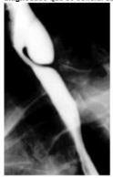
A Sangramento
B Obstrução esofagiana
C Broncoaspiração
D Formação de fístula
E Carcinoma de células escamosas
Questão 99 · Esôf ago Hipercontrátil · Esôf ago Quebranozes · 4000077306Paciente feminina refere dor torácica e disfagia. A endoscopia digestiva alta revelou hiperperistaltismo esofágico, enquanto a manometria do esôfago não identi cou alteração na pressão e no relaxamento do esfíncter esofagiano inferior; a amplitude pressórica foi de 408 mmHg com ondas de contração de nove segundos. Qual o diagnóstico da paciente?
A Motilidade esofágica ineficaz.
B Distúrbio inespecífico da motilidade esofágica.
C Esôfago quebra nozes.
D Acalasia.
E Espasmo esofágico difuso.
Questão 100 · Sintomas Típicos · Acalásia Megaesôf ago · 4000076952A azia e a regurgitação são os sintomas mais comuns da doença do re uxo gastroesofágico, contudo, se a regurgitação for de alimentos não digeridos deve-se pensar em:
A acalasia
B pancreatite
C divertículo gástrico
D doença de Menetrier
Questão 101 · Tratamento Cirúrgico · Divertículo de Zenker · 4000068562A miotomia dos músculos cricofaringeo e tirofaríngeo é parte fundamental no tratamento cirúrgico de
A divetículo de Zenker.
B divertículo epifrênico.
C divertículo médio esofagiano.
D divertículos esofagiano em geral.
Questão 102 · Disf agia Esof ágica Disf agia de Condução · 4000067997O termo afagia episódica é em geral atribuído aos pacientes que apresentam:
A membranas esofágicas.
B lesão cáustica do esôfago.
C compressão extrínseca vascular do esôfago proximal.
D anel de schatzki.
E compressão extrínseca posterior do esôfago médio.
Questão 103 · Hérnia Hiatal por Deslizamento Tipo I · 4000052037Dentre as hérnias hiatais, qual a que mais comumente pode originar a incompetência da cárdia?
A Hérnia de Morgagni.
B Hérnia de rolamento.
C Hérnia paraesofágica.
D Hérnia de Bochdaleck.
E Hérnia de deslizamento.
Questão 104 · Divertículo de Tração Mesoesof ágico · 4000052019O divertículo do terço médio do esôfago é:
A Anomalia congênita.
B Hipotensão muscular nesse segmento.
C Causado por orifício na camada muscular da parede do esôfago nesse ponto.
D Divertículo falso causado por tração externa principalmente causada por inflamação de linfonodos mediastinais.
E Divertículo verdadeiro causado por tração externa principalmente causada por inflamação e retração de linfonodos mediastinais.
Questão 105 · Fase Esof ágica da Deglutição · 4000052007Quais destas ondas peristálticas são responsáveis por contrações desordenadas do esôfago?
A Aperistalse.
B Ondas primárias.
C Ondas terciárias.
D Ondas secundárias.
E Ondas antiperistálticas.
Questão 106 · Esof agograma Baritado · 4000036948O Esofagograma baritado abaixo apresenta uma alteração clássica de qual patologia?
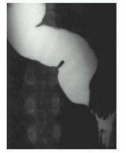
A Espasmo esofágico difuso.
B Acalasia.
C Motilidade esofágica ineficaz.
D Carcinoma espinocelular esofágico.
Questão 107 · Acalásia Primária Idiopática · Tratamento · 4000023329Analise a figura a seguir. O paciente com a manometria esofagiana apresentada deve ser submetido a que tipo de conduta?
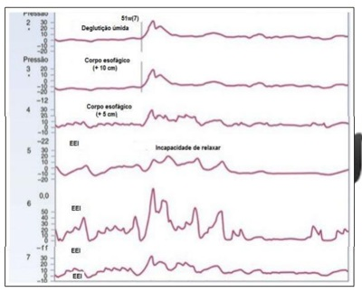
A pHmetria de 24 horas.
B Cardiomiotomia.
C Confecção de válvula antirrefluxo.
D Introdução de medicação inibidora dos canais de cálcio.
Questão 108 · Tratamento Endoscópico · Tratamento Cirúrgico · Divertículo de Zenker · 4000121687Observe os exames a seguir, para responder a questão. A opção de tratamento para essa patologia consiste em:
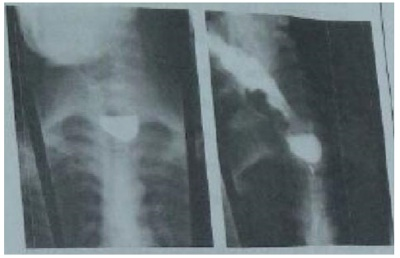
A Dilatação endoscópica.
B Prótese endoscópica.
C Miotomia esofágica por endoscopia (POEM).
D Diverticulectomia por via laparoscópica.
E Diverticulectomia e miotomia por via cervical.
Questão 109 · Síndrome de Boerhaave · 4000120472Uma paciente de 27 anos de idade, 46 Kg, tabagista, dependente química, apresenta-se ao serviço de emergência relatando quadro de episódios repetidos de vômitos, dor retroesternal, disfagia e hematêmese iniciados há 24 horas. No momento, apresenta-se com mal-estar, temperatura axilar 38,5°C, dor retroesternal e torácica, além de taquicardia, taquipneia e sudorese. Considerando o quadro clínico descrito, o provável diagnóstico é de:
A laceração de Mallory-Weiss.
B perfuração de úlcera gástrica na junção esofagogástrica.
C síndrome de Boerhaave.
D neoplasia de junção esofagogástrica com invasão de estruturas adjacentes.
E infarto agudo do miocárdio em paciente jovem.
Questão 110 · Hérnia Hiatal por Rolamento Paraesof ágica ou Tipo II · Hérnia Hiatal por Deslizamento Tipo I · 4000102846Radiograf ia de tórax Homem de 42 anos de idade queixa-se de tosse seca há 6 meses, pior aos grandes esforços e ao decúbito. A radiogra a de tórax está mostrada a seguir. Qual exame complementar é necessário para a avaliação da causa da tosse? Respostas: 1 12 23 34 45 56 67 78 89 100
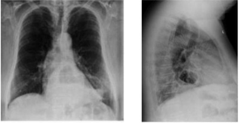
A Endoscopia digestiva alta.
B Broncoscopia com lavado.
C Ecodopplercardiograma.
D Angiografia torácica.